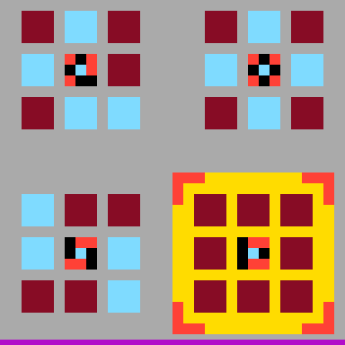
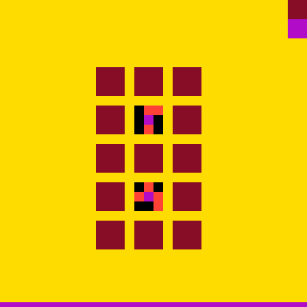
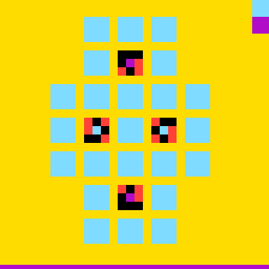
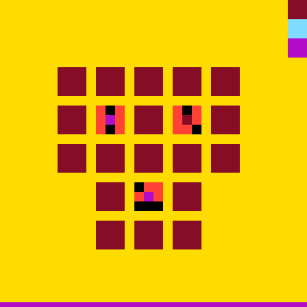
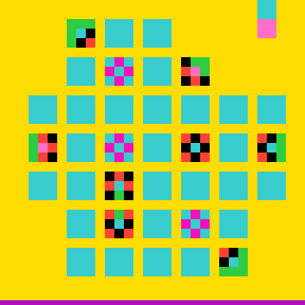
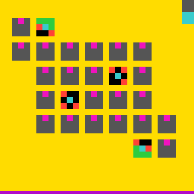
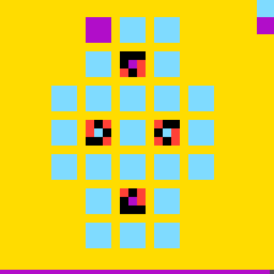
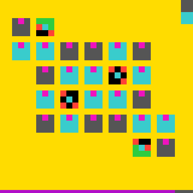

ASSAY is a reasoning harness. Give your agent a goal and a world to act in, and ASSAY makes it prove what it knows: every action comes with a prediction, code checks the prediction against what the world did, and the task is over when the world says so.
Onboard your agent
Paste this into Claude Code to install the plugin, then play the ARC-AGI-3 sample or connect a world of your own.
Coding harnesses like Claude Code and Codex give a model tools and a loop: read, edit, run a command, repeat. They are built to get work done fast, and they stop when the model believes the work is done. That is the right shape for most edits.
ASSAY is built for the other kind of task: the kind where the agent does not yet know how the world behaves, where acting has a cost, and where "I think it's done" is not good enough. It sits between the agent and the world as a referee:
Predict before you act. Before every paid action the agent writes what it expects to happen. The harness refuses an action without one.
Held or missed. After the action, code compares each predicted outcome with what the world reported, and labels it held or missed. A miss shows the value the world actually returned.
Reason from facts. Only what held enters the agent's world model. The agent names the parts of the world it cares about and looks them up on disk by address, instead of remembering them, so a long run keeps its detail.
The world decides when it is over. The run ends at the goal, at the budget, or at a stop the agent declares with a reason. Everything is written to a hash-chained journal anyone can audit.
A coding harness
ASSAY
Built for
Making the change
Finding out what is true, then making the change
Before acting
The model decides and acts
The model writes a prediction, then acts
What the agent knows
What it read and remembers, summarized as the context fills
What its predictions proved, kept on disk and looked up by name
When it stops
When the model says it is done
When the world reports the goal, the budget runs out, or the agent declares why
What you get
A transcript
A tamper-evident journal and a report of what was verified
How general it is
ASSAY knows nothing about any particular world. A world is anything the agent can act on and get an answer back from: a game, a test suite, an HTTP API, a pair of spreadsheets, an MCP server, a speaker of a language nobody wrote down. To ASSAY each one is the same three things: a list of actions, an observation after each action, and a goal. The same harness has played ARC-AGI-3 games, Factorio and long-context reading tasks, and in Claude Code it runs on tasks from your own day.
It does not replace your agent. Claude Code is still the one playing; ASSAY decides what counts as known, and when the work is finished.
When it fits
/assay:connect checks the fit for you before it builds anything. The short version:
Good fit
The world can tell you whether the goal is reached
The rules are not fully written down
Acting costs something, or a wrong step is hard to undo
The task is long enough for memory to drift
Use your agent as it is
The change is small and the answer is obvious
Nothing outside the model can judge the result
Speed matters more than a verified record
On small, well-documented tasks, plain Claude Code with /goal is often quicker and cheaper. ASSAY earns its overhead when the agent has to discover how the world works.
Apply it to a task
ASSAY runs on a pack: the piece that connects it to one world. Play a sample pack as it is, or have Claude build a pack for a world of your own, then say what you want to achieve there.
Describe the world and what counts as done there. Claude checks the fit, asks up to four questions, builds the pack (its adapter, its registry, the world's scripts) and tests it. Files, a simulator or a game on your machine, a repository with tests, or a service with an MCP server or an HTTP API. Skip this step for a sample pack such as arc-agi-3.
/assay:connect "the inventory service on localhost:8080, with its OpenAPI spec in ./openapi.json"
Say what to achieve
Attach starts a run on the pack with your goal, and keeps the owner token out of the agent's reach. Connect prints the pack's path.
/assay:attach ~/assay/worlds/inventory "every SKU below its reorder point has an open purchase order"
Run it, and watch
/assay:run plays the run session after session until the world says it is over. It pauses and asks you when an action needs your approval. /assay:watch gives you one line whenever something changes, and /assay:report writes up what the run verified.
/assay:run
/assay:watch
/assay:report
If a run goes badly, /assay:diagnose reads it against the five reasoning layers and says where to steer. /assay:compare runs the same task under plain Claude Code with /goal and scores both with one checker. A pack built by another tool plugs into /assay:attach the same way.
Example: win an ARC-AGI-3 game
ARC-AGI-3 games come with no instructions. The agent sees a 64 by 64 grid of colors, has a handful of actions, and has to work out what each level wants from nothing but the responses. That is exactly the kind of world ASSAY is for. The example here is ft09, a public game of six levels that the agent plays by clicking cells.

Level 1, start

Level 2, start

Level 3, start

Level 4, start

Level 5, start

Level 6, start

Level 3, after e12

The win, e82
Frames from the published ft09 journal (evidence/arcagi/journal-ft09.jsonl.gz), rendered from the grid the world returned.
6 / 6levels completed
82paid actions, of a 200 budget
185outcomes held
5outcomes missed
Run it yourself
The ARC-AGI-3 pack ships with the plugin. You need uv and an API key from arcprize.org.
Save your ARC API key
Once, in your own terminal rather than in Claude Code. It asks for the key without showing it. The harness reads the file when it downloads a game, so the key reaches neither the agent nor the record.
Any of the 25 public games, by its id. The first time, attach builds the game's Python (3.14.5 and the ARC client), then it starts the run, capped at 200 paid actions.
/assay:attach arc-agi-3 "win the game ft09"
Play it, watch it, read the report
The player starts at assay status and plays until the game is won or the budget is spent. One line whenever something changes; the report says what the run verified.
/assay:run
/assay:watch
/assay:report
What the agent did
Four moments from the published run. Each paid action carries a prediction, written before the click, and a receipt the kernel wrote after it. The line in italics is the agent's own note on why it took the action.
e1ACTION6 x=38 y=38held
"framed grid cell (0,0) must be cyan per its marker; test that a click sets a block 9->8"
predict verify:checks/flip_00.py; ch dmiss delta = -1 ✓ verify:checks/flip_00.pycell (0,0) flipped 9 to 8; miss 4 to 3 ✓ ch dmiss delta = -1dmiss moved -1 (4 to 3)
The first click is an experiment. The agent wrote a small verifier program for its theory, and named a state, dmiss, for the cells still wrong.
e4ACTION6 x=38 y=54held
"last mismatching cell; if matching the marker is the win condition the level should complete on this click"
predict level+1 ✓ level+1level advanced to 1 completed
Three clicks in, the agent bets the level on its rule. The world agrees, and the rule becomes a fact.
e12ACTION6 x=22 y=61 missed
"L3 has four markers with MIXED centre colours; confirm the per-marker 0->own-centre rule paints the colour I predict before batching 13 more"
predict verify:checks/f_4_20.py; ch xmiss delta = -1; ch bar delta = -2 ✓ verify:checks/f_4_20.pyblock row 4 col 20: 8 to 12; mismatches 14 to 13 ✓ ch xmiss delta = -1xmiss moved -1 (14 to 13) ✗ ch bar delta = -2bar moved -1 (64 to 63)
The rule held on a harder level, but the agent's guess about the bar along the bottom did not. The miss stays in the record with the real value, and the agent stops trusting that part of its model until it re-earns it.
e82ACTION6 x=54 y=40held
"last cell owed on the last level; miss3 goes to 0, which has completed every level so far, and level 6 of 6 should be the terminal win"
The agent called every level completion in advance, at e4, e11, e27, e48, e69 and e82. The run ends here because the world reported WIN, not because the agent said so.
Twelve tasks from an ordinary week. A sample runs as it is, on its own world. For your own files, repository or service, connect it first, then attach it with your goal. Swap in your own names.
Sample a pack in the catalog, on its own world: one commandYour world/assay:connect builds the pack and prints its path; /assay:attach runs it
Code
Fix a flaky test at its cause
Sample
worlds/recipes/flaky-test
A test suite that fails on some runs and passes on others. One green run proves nothing, so the agent cannot stop at the first pass: it has to predict which runs fail and why, until it can name the cause.
/assay:attach flaky-test "make the suite pass on every run by fixing the cause"
Done when
the suite passes 20 runs out of 20
Worst case
nothing: the agent works on a copy of the project
How the sample is built, and your own repository
The pack ships a small sales-report library whose suite is flaky on purpose. The agent reads and edits the files freely, but runs the tests only through a paid RUN_TESTS action, so every run carries a prediction: how many runs fail, which tests, at what rate.
WORLD CARD flaky-test code M-R-C-0 family Solve fit yes
acts a project and its test runner (repo archetype, worktree mode)
answers roughly: a run passes or fails by chance
states failed_runs, pass_rate, runs, failing
done when the suite passes 20 runs of 20
worst case nothing: a copy of the project in work/
The checker then runs the project's tests, and its own, under thirty fixed hash seeds. A fix that only makes the failure quieter does not pass. For your own repository, connect it first:
/assay:connect "my repository in ./shop, whose tests fail on some runs; done when they pass 20 runs in a row" /assay:attach ~/assay/worlds/shop "fix the cause of the flaky tests"
Fix a bug the tests catch
Your world
repo archetype
The tests say what is wrong but not where. The agent predicts which tests each edit will turn green before it runs them.
/assay:connect "my repository in ./calc; done when every test in tests/ passes without changing the tests" /assay:attach ~/assay/worlds/calc "make every test pass without changing the tests"
Done when
every test passes
Speed up a slow function
Your world
repo archetype
Every change is a guess about where the time goes. The agent predicts the timing before each benchmark run, and the output has to stay the same.
/assay:connect "the project in ./stats and its benchmark; done when build_report runs five times faster with the same output" /assay:attach ~/assay/worlds/stats "make build_report five times faster with the same output"
Done when
the benchmark meets the target and the outputs match
Reproduce and fix a crash
Your world
repo archetype
First a test that crashes the way the report says, then a fix that makes it pass. A theory of the cause has to predict the crash before the fix counts.
/assay:connect "my repository in ./app and the crash in issue 142; done when a new test reproduces the crash and passes after the fix" /assay:attach ~/assay/worlds/app "reproduce the crash in issue 142 with a test, then fix it"
Done when
the new test fails before the fix and passes after
Migrate a SQLite database
Your world
local archetype
Hard to undo, and the old schema has surprises. Destructive steps need a declared worst case and a way back before they run.
/assay:connect "app.db and the new schema in schema_v2.sql; done when the new schema is in place and every row is accounted for" /assay:attach ~/assay/worlds/app-db "migrate app.db to schema_v2.sql without losing a row"
Done when
the new schema is in place and every row is accounted for
Data and office
Reconcile a bank statement with the books
Sample
worlds/recipes/spreadsheet-reconcile
Two ledgers that should agree and do not. Each month hides a few discrepancies of the kinds a bookkeeper meets, and a month closes only when every line is accounted for. The agent predicts what each match or adjustment does to the open balance before it makes it.
/assay:attach spreadsheet-reconcile "close all three months"
Done when
every month is closed
Worst case
nothing: the agent works on a copy, and deleting a line is flagged destructive
How the sample is built, and your own ledgers
The pack generates three months of a bank statement and a company's books, July to September 2026, from the run's seed, with five discrepancies per month. The world refuses what its rules forbid, and says why.
WORLD CARD spreadsheet-reconcile code M-E-C-0 family Solve fit yes
acts two CSV ledgers on this machine (local archetype, copy mode)
answers exactly
states bank_open, books_open, carried_open, months_closed, difference
done when three months closed (one unit per month)
worst case nothing: a copy of the ledgers; DELETE is flagged destructive
The sample plays its own ledgers, not yours. For your own, connect them first: say which file is the bank side, which is the books, and the period.
/assay:connect "my bank statement in bank.csv and my books in ledger.csv, July to September; done when every month is closed" /assay:attach ~/assay/worlds/ledger "reconcile the statement against the books, month by month"
Clean a contacts spreadsheet
Your world
local archetype
Duplicates that are not quite duplicates, and formats that drift row by row. The agent predicts how many rows each rule merges or fixes before it applies it, so a rule that is too greedy shows up as a miss, not as lost contacts.
/assay:connect "contacts.csv; done when there is one row per person, every email is valid and every phone number is in one format" /assay:attach ~/assay/worlds/contacts "clean contacts.csv"
Done when
the checks for duplicates, emails and phone formats all pass
Services and the web
Migrate customers from a legacy API
Sample
worlds/recipes/legacy-api
The old CRM and its replacement, both as HTTP APIs, and documentation that is silent or wrong in places. Where the docs fail, the agent has to find out by asking the service, and every call carries a prediction of the answer.
/assay:attach legacy-api "move the active customers into the hub with their ids, names and emails, and leave the archived ones"
Done when
the hub holds exactly the active customers
Organize a notebook through MCP
Your world
service archetype
Any MCP server can be a world. Connect drafts the registry from the server's own tool list, and each call predicts what the server answers.
/assay:connect "the notes MCP server I start with python3 notes_server.py; done when the notebook holds what I ask for" /assay:attach ~/assay/worlds/notes "leave the notebook holding exactly three notes, one of them titled groceries"
Done when
the notebook holds exactly what the goal says
Clear a page's accessibility errors
Your world
repo archetype
Fixing one error often uncovers another. The agent predicts the error count after each change, and the checker runs the audit tool, not the agent's opinion.
/assay:connect "the site in ./web and its audit, npm run audit; done when the checkout page reports zero errors" /assay:attach ~/assay/worlds/web "clear every accessibility error on the checkout page"
Done when
the audit reports zero errors on the page
Puzzles and discovery
Learn a made-up language
Sample
worlds/recipes/hidden-grammar
A speaker who only says whether a sentence is acceptable, never why, and 40 questions to ask. Nothing in the world says when the agent is done, so it has to judge its own classifier.
/assay:attach hidden-grammar "write a classifier that judges sentences the way the speaker does"
Done when
the agent declares it; the checker scores it on 400 unseen sentences
Light every lamp in a switchboard
Your world
local archetype
Switches wired to lamps in ways nobody wrote down. A small puzzle on your machine, and a good first world to connect.
/assay:connect "the switchboard puzzle in ./switchboard, lamps.json and its flip command; done when every lamp is on" /assay:attach ~/assay/worlds/switchboard "turn every lamp on"
A referee for agents: the agent must predict what each action will do before it acts, code grades the prediction against the world's response, and the run is over when the world says so, not when the agent believes it.
To start, ASSAY needs a world to interact with, the actions it may take, and a goal. The agent then explores the world by building a small formal language that describes it symbolically. It trusts its own world model only where that model predicted the world correctly: every prediction is labeled held or missed, and the agent reasons from what held.
The formal language is the basis for addressing context rot and referent grounding in LLM and LRM agents, and it reduces the need for compaction or summarization in long-running agents working toward a goal. Prediction is how the agent fact-checks its knowledge against the environment: a fact enters its world model only through a prediction that explained how the world behaved.
What you supply
Part
What it is
The adapter
One Python file that carries an action to the world and brings the observation back. ASSAY never sees the world any other way.
The registry
A JSON contract: the action names and their typed parameters, the budgets, the flags and the goal.
The manual
CONSTITUTION.md, which tells the agent how to learn any world under the harness. It is written once, not per world.
The agent operates the harness from a shell through the assay command line, or through the tool server, which offers the same operations as MCP tools. The kernel makes no model calls, so any model process that can drive a shell can play, and so can a person at a terminal.
In the repository: GUIDE.md is the user guide, ONBOARDING.md attaches a new world end to end, docs/ARCHITECTURE.md is the component model, and bench/ holds the benchmark worlds and their results.
The language
The agent names the parts of the world it cares about as addressable states: a path into the observation, or a small program that extracts a value from it. The grammar then gives it a fixed set of forms to say what an action will do:
a state equals a value, moves by an amount, or crosses a threshold;
the observation changes, or stays the same;
a level clears, or the goal is reached;
a program the agent wrote decides (verify:path.py), for what the forms cannot say.
Two outcomes: the state named counter reads 3 after the action, and the world reports its goal reached.
Held or missed
Before every paid action the agent writes its prediction, and the daemon refuses an action without one. After the action, code checks each outcome against what the world reported and labels it. On a miss the receipt shows the value the world reported:
receipt
✓ ch nkeys = 3 ✗ ch hl = 1 | ch hl = 0
What held is a fact in the record. What missed stays in the record as a miss. The agent reasons from the facts.
Fact-checking as grounding
Nothing enters the agent's world model except through a prediction that was checked. The agent's own notes are not the record, and knowledge imported from an earlier run enters demoted and must be re-earned by predictions in the new run.
The record lives on disk, and the agent looks a state up by its address instead of recalling it. That is what lets a long run keep its detail instead of summarizing it. The one page of notes the agent keeps is its own summary, and the manual says what belongs there.
Reasoning layers
ASSAY places what an agent needs to reason at five layers, from the most general to the most specific. Each layer is a place to steer the agent, and each tells the operator where to work when the agent fails. /assay:diagnose reads a run against them.
The constitutionThe mental model a domain needs, written by a human once. It says how to learn any world under the harness, and carries the experience pretraining does not.Change it when the agent lacks a way of working that no training data contains.
ModulesReasoning in code that the agent can pick up. A module watches the record and advises or demands.Change it when the agent fails to recognize a pattern that repeats across a long trace.
The registry and the adapterThe description of one world and the only way to touch it: the actions, their typed parameters, the budgets and the goal, and the code that carries them.Change it when the failures come from the interaction itself.
Addressable statesThe world model the agent builds: the states it named, their readings, the predictions it made over them and how each was labeled.Change it when reasoning breaks from forgetting or from referents that drift.
The modelEverything behind the model's API.This layer is not ASSAY's.
The more the model already knows the world, the less the layers above it need to say. The more the agent struggles on its own, the more they carry.
Install the CLI
Python 3.12 or newer, on macOS or Linux. The daemon listens on a Unix domain socket, the run state is guarded by file locks, and verifiers run under resource limits, none of which Windows provides in the same form. Pick one of three ways in:
No install
bin/assay is the launcher. It runs the first python3 on PATH that has numpy 2.x, else uv run resolves the inline dependencies, else it builds a private runtime once. ASSAY_PYTHON=/path/to/python pins the interpreter.
Editable install, recommended for benchmark worlds
The same venv holds the adapter's dependencies, and the daemon inherits it.
pillow, for frame worlds and rendering. A dict world does not need it.
[arcagi]
the ARC-AGI-3 client
[server]
the mcp package, for assay serve-tools: the agent-facing operations as MCP tools over the same daemon
[dev]
pytest
The CLI alone
pipx install '.[grid]' puts assay on PATH in its own environment, for worlds whose adapters have no dependencies of their own. Or straight from GitHub: pip install git+https://github.com/arjmandi/assay.
assay doctor checks the interpreter, the dependencies, the anchor directory, and, inside a run directory, the daemon, the adapter and the registry.
Quickstart
Sixty seconds, no API keys: a counter world, played by you at a terminal.
Every command takes --json and prints one JSON document. A refusal is one line, ERROR | CODE | message, with the codes listed in docs/ERRORS.md.
One person, two roles. The quickstart has you start the run and play it. An evaluated agent does not start the run: the operator starts it with --owner-token-file, and the agent's session begins at assay status.
Attach a world
A world is an adapter and a registry; a pack is the two together with the world's scripts and a manifest, pack.json. In Claude Code, /assay:connect builds a pack for a new world from one of three archetypes (files, a simulator or a game on this machine; a repository with tests; a service with an MCP server or an HTTP API), and /assay:attach <pack> "<goal>" starts a run on it. A pack built by hand or by another tool runs the same way.
pack.json (every key optional)
{
"pack": 1,
"name": "arc-agi-3",
"adapter": "adapter.py:factory",
"registry": "registry.json",
"world_id": {"is": "the game id", "default": "ft09", "values": ["ft09", "ls20", "..."]},
"python": {"version": "3.14.5", "requirements": "requirements.txt"},
"credentials": [{"name": "ARC_API_KEY", "file": "~/assay/tokens/arc_api_key"}],
"deny": ["arc_api_key", "arc_agi", "arcengine"],
"player": {"note": "The observation is a 64x64 colour grid ..."},
"win": "the game's own: WIN when every level is completed"
}
worlds/README.md, "The pack manifest", lists every key. By hand, the steps are:
Write the adapter
A factory that returns a session object with an observation property, a step(action, data, reasoning) method, and optionally finalize(). The observation carries the state (NOT_FINISHED, WIN or GAME_OVER), the levels completed, the available actions and the world's data. examples/counter_world.py is a complete world in about forty lines; examples/new_world/ is the template to copy.
adapter.py
class MyWorld:
def __init__(self, root, config):
self.state = "NOT_FINISHED" # config["seed"] keeps it reproducible
@property
def observation(self):
return {"state": self.state, "levels_completed": 0, "win_levels": 1,
"available_actions": ["MOVE"], "data": {...}}
def step(self, action, data, reasoning):
... # reasoning is yours to log, never to obey
return self.observation
def factory(root, config):
return MyWorld(root, config)
Write the registry
Names and typed parameter schemas only. The semantics are never written down: the agent earns them by acting. See the settings below.
The player's session begins at assay status, under the manual. In Claude Code, /assay:run launches it and keeps it going between sessions. ONBOARDING.md is the long form.
A parameter schema is a JSON Schema subset: integer, number, string, boolean, object and array, with enum, bounds and lengths, nested as deep as needed. The kernel validates every value before any spend.
Per-action flags
Flag
What it buys you
destructive
The action refuses to run without a declared worst_case and recovery. It never bans; it prices one declaration. Destructive actions cannot hide inside batches.
approval
Default deny. Each use needs a fresh assay approve NAME --token from the owner, one-shot, expiring in ten minutes.
liveness, rehearsal_quota
A live action refuses until a simulator run's imported record shows enough graded rehearsals, or the owner waives it.
description
Allowed but untrusted: shown as data, and withheld entirely when zero_prior is on.
Run-level keys
Key
What it sets
budget
Hard caps: paid actions, and optionally dollars reported through assay spend report
goal
The standing goal, shown in every status until the world's win state says it is achieved
batching.hand_cap
How many actions a hand-written batch may hold (3 by default; null removes the cap)
secrets
Names of environment variables whose values are scrubbed from every journal line
modules, module_modes
Behavior modules, and whether each advises or blocks
notes_cap
The size of the agent's one page of notes
zero_prior
Withhold every description, so the agent starts from names alone
Run settings
In Claude Code, /assay:run drives the session runner. These are its settings; it shows a dry run before it starts.
Option
Effect
--player
The host that plays (default claude, Claude Code)
--model
The player's model, as the host names it
--hours
Wall clock for this invocation (default 8)
--max-sessions
Player sessions launched in this invocation, one after another (default 5)
--max-usd
A cap on the host's bill for this invocation, as its reports say it
The world's credentials are kept out of the player's environment, and a Stop gate lets the player stop only at WIN, at the budget, at an owner action, or with a declared reason. To stop after the current session, create <run dir>.sessions/STOP.
Trust model
ASSAY's record is tamper-evident, not tamper-proof. The agent and the daemon run as the same user, so the agent can write the run directory. What the harness does about that:
The daemon holds the chain head in memory and verifies the journal on disk before every paid action. On a difference it refuses to continue and seals the anchor file at the last trusted event.
In Claude Code, the shipped hooks refuse writes under .assay/ and world access that bypasses assay.
The operator holds the owner token outside the run. Approvals and waivers are granted inside the daemon against it.
Every grade is computed by the kernel from the world's own response. Nothing the agent asserts is load-bearing, and the published journals replay through the engine.
The limits, stated plainly: the activity log is the agent's to write, so a waiver or a module recorded there is admitted at the next start on the operator's word, not the daemon's. An agent that rewrites the journal, the chain file, the mutation log and the anchor file consistently while the daemon is stopped is caught only by a head published or anchored outside its reach. That is why heads are published with every evidence pack, and why a separate user for the daemon is the recommended setup where the stakes warrant it.
Verify a journal
The journal format, assay-journal-v1, is an open standard under MIT in verify/: the run layout, the event schema, the chain rule, the ungated-event rule and the verdict. The harness is open source, so its own audit is the check:
assay --run-dir <run-directory> audit # chain, contiguity, the ungated rule, the anchors
python3 evidence/verify_all.py # every published journal against its head
The verdict is CLEAN or INVALID FOR SCORING. A verdict proves the journal matches its published head, that every paid action carried a prediction registered before it ran, and that nothing is missing, so published scores recompute. It does not re-execute the grading, and it cannot prove anything about live reasoning. The truth of a benchmark result rests with the benchmark's own public scorecards, linked in the evidence packs.
Status and license
1.2.0 was the first open-source release; the plugin is at 1.5.0. The ARC-AGI-3 campaign of 2026-08-21 to 08-23 ran on the kernel published as v1.0-rc1, and the Factorio and OOLONG runs on that kernel plus two small fixes. The 1.2.0 kernel is a refactor of it, verified by replaying the 25 published run directories unchanged. See CHANGELOG.md.
ASSAY is open source under the Apache License 2.0. The journal standard and the published journals in verify/ and evidence/ are MIT. The independent checker of 1.2.0 was retired after 1.3.0, and the tag v1.3.0 holds it. The repository takes issues, not pull requests.